Government of Ontario · Internship
Built interface systems that streamlined Ontarians' access to employment and training resources.
Ministry of Labour, Immigration, Training and Skills Development · May to August 2022
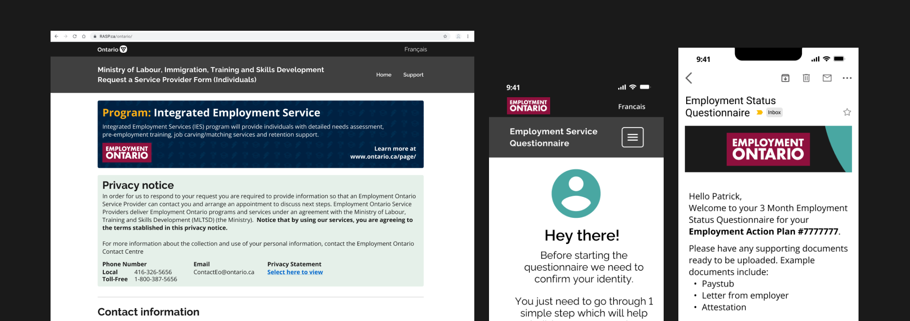
Employment Service Questionnaire
Creating an easy to use and trustworthy questionnaire experience for Ontarians seeking employment.
- The Issue
- Generic, text-heavy emails with little Ontario branding led clients to a questionnaire that wasn't mobile-friendly.
- My Job
- Re-design the emails and questionnaire web pages a client sees after enrolling in the program.
- Responsibilities
- UX/UI Design, User Research, Prototyping, Email Design
- Team
- Colman Tsang, Romina Esparza
- Results
- A mobile-first, on-brand experience that management loved, shipped and handed over to the development team.
An overview
The employment service questionnaire was part of a program that operates alongside Employment Ontario offices. My role was to re-design the email and questionnaire web pages that a client would see upon enrolling in the program. This connected process involved multiple areas of government working together to develop and design a coherent machine for external providers.
Connecting service providers with busy individuals
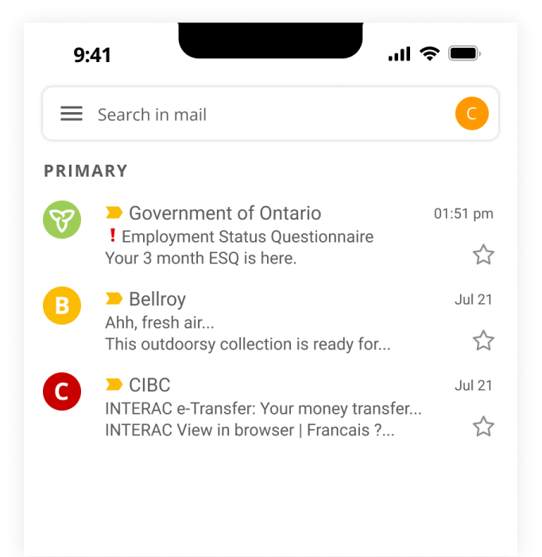
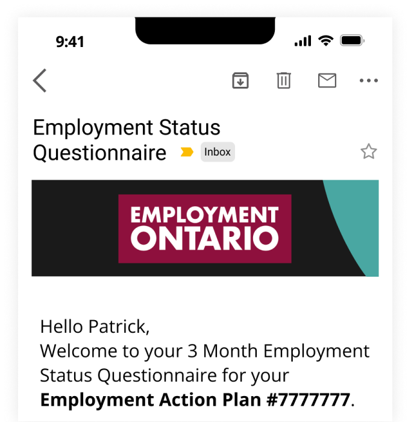
The problem, why weren't clients completing the questionnaire?
The existing emails looked like generic, text-heavy messages with little Ontario branding, and the questionnaire itself wasn't mobile-friendly. We learned a few problems had to be addressed:
Mobile first design
We focused on mobile first because clients would use phones over computers.
Valuable data lost
Important data points were not collected because people didn't find the site usable.
Untrustworthy branding
The entire process had outdated branding and designs that did not align with Ontario.
These insights helped us conclude that…
A complete re-haul of the initial email design, and a re-design of the included questionnaire using Ontario's branding and design systems, was necessary.
An overview of the previous experience
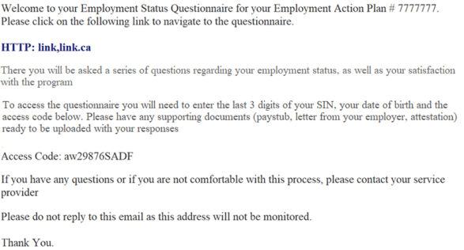
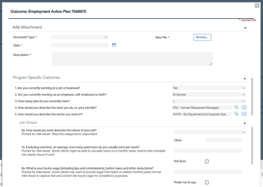
Understanding the old designs, why was it not ideal?
Text-heavy
The text had no visual hierarchy, often leading to clients missing important pieces of information.
No icons
The entire process had little to no visual cues. Icons served as a great tool to help visualize key points.
Desktop first design
Clients were often on-the-go, meaning we needed a mobile-first approach.
The next step: creating a mobile first experience
Goals
- Re-design the pre-questionnaire emails according to ministry and government guidelines.
- Apply mobile-first design strategies and usability to the client-facing questionnaire website.
Research
Mobile surveys and questionnaires are a popular method of data collection. I conducted a competitive analysis of popular tools like SurveyMonkey, Google Forms and external surveys. I also analyzed internal government tools such as the Ontario Design System and Canada's Federal Design guidelines.
What did I learn?
- Design guidelines were useful when aligning an email template designed for the masses.
- Well designed questionnaires open users up to answering questions in ways they may not have thought about.
- Using both icons and buttons made text easier to digest, as there was less to read.
Exploring the refreshed designs
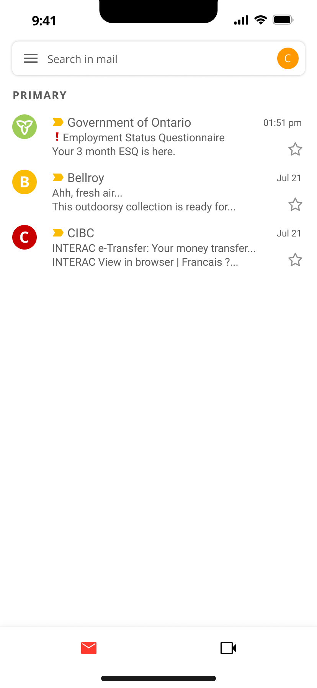
Inbox
- To capture the client's attention from the inbox, emojis were used in the email header.
- Official Government of Ontario logos and branding were used in the profile picture.
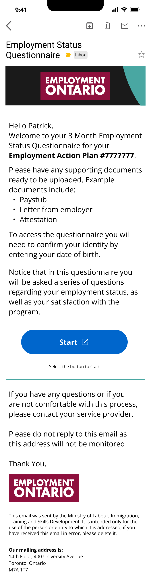
- Emphasized text hierarchy to help prioritize what a client needed for their next steps.
- Re-designed banner to align with Ontario's official branding and encourage client trust.
- Clear call-to-action button, encouraging clients to proceed with the questionnaire.
Updated designs of the questionnaire web page
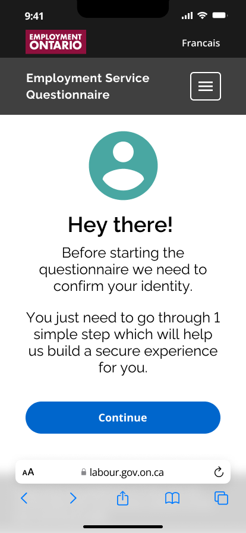
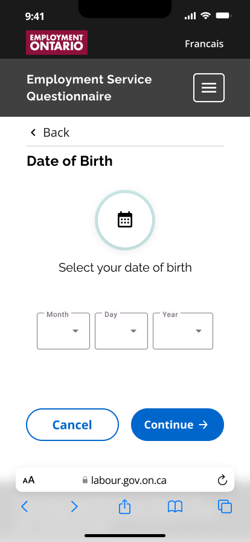
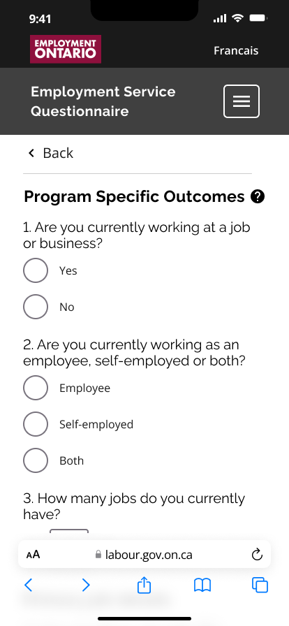
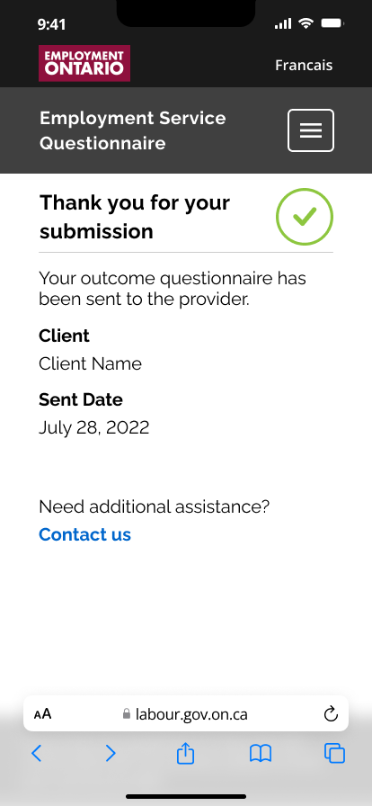
Key updates: adapting Ontario's Design System kit
The main changes involved applying Ontario's design system to the questionnaire. I also followed mobile design best practices to create a more engaging mobile experience. A single-page-per-action design was adopted, along with call-to-action buttons and clearer UX language throughout the questionnaire.
The overall impact
I'm happy to say that internal management was over the moon about this re-design. The project has since shipped and been handed over to the development team, where it has been in development since I left. When the live product launches, it will help transform the experience for Ontario's employment office clients across the province.
Takeaways & lessons learnt
Working with the various teams on this project taught me the importance of mobile-first design. I also learned that working within existing design systems, such as the Government of Ontario's, has many pros and cons that I had to learn to design around.
Staff Onboarding Application
During my time at the Government of Ontario, I worked in the Ministry of Labour, Immigration, Training and Skills Development. My first month started with a lot of training material and learning how the internal systems worked, which let me excel at the projects I completed across various sub-teams over the following three months.
Each project had different goals, but the over-arching theme was how both users and clients interact with employment services. This uncovered a problem that had to be addressed: onboarding new hires and interns.
- The Issue
- New hires were onboarded with a pile of old slide decks and PDFs sent over Teams chats.
- My Job
- Design an onboarding platform on Microsoft PowerApps with the checklist and resources a new hire needs.
- Responsibilities
- UI Design, UX Research, Prototyping, Presentation Compiling & Designing
- Results
- High-fidelity prototypes that managers loved, partially built on PowerApps and handed off to development.
The problem, how do you onboard someone with just slide decks?
The business development unit didn't have a good system for onboarding new hires, particularly interns and fresh graduates. Having just been in that position, I'd experienced the pain points first hand, so I compiled insights from my own experience and interviews with other interns.
Insight 1
A checklist was useful for new hires in understanding what tasks they had to complete.
Insight 2
Having resources readily available is valuable, as people like to reference material.
Insight 3
People used their government-issued laptops, meaning there was no need for mobile-first.
So the plan was to…
Build a new platform on Microsoft PowerApps that brought together the resources and checklist features a new hire would need to access.
An overview of the previous experience
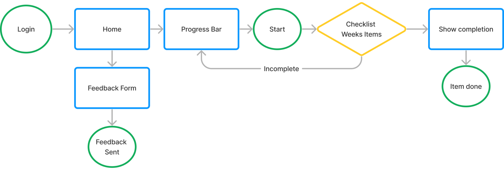
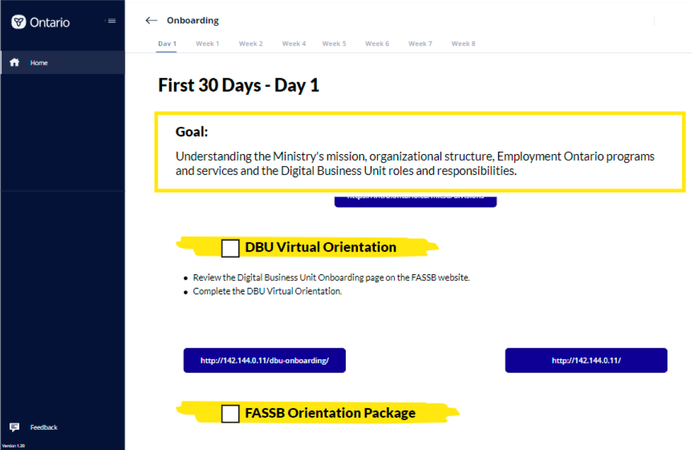
Why didn't this work?
- Users had a very linear method of navigation.
- Limited number of options to learn from as a new hire.
- Not enough features or modularity for managers to find useful.
- Files were constantly getting lost because they were just sent over Teams chats.
The refreshed & new experience
Goals
- Create an MVP prototype of most features for the onboarding platform, to be developed on PowerApps.
- Allow for modularity that enabled managers and supervisors to add and remove resources.
- Create an experience new hires could use throughout their whole internship.
Process
Plan & understand
- Explore and understand previous designs
- Interview managers & team leads about their experiences
Design
- Build low-fidelity wireframes
- Develop design system
Prototype & develop
- Build prototypes with full functionality
- Implement designs into PowerApps
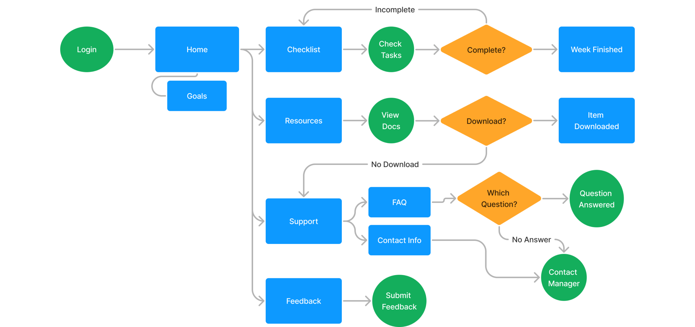
What changed?
- Explorative navigation that lets new hires learn at their own pace.
- More options and resources to self-learn, reducing workload for managers.
- Modularity for management to add or change items as needed.
A key feature
Managers across teams loved the idea of adding a "goals 100-day plan", which originated from an Excel worksheet used previously. This meant we needed to add it alongside the task list as a key feature.
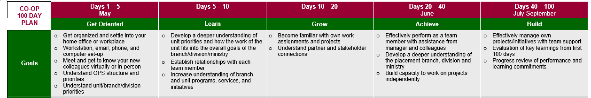
Exploring the new designs
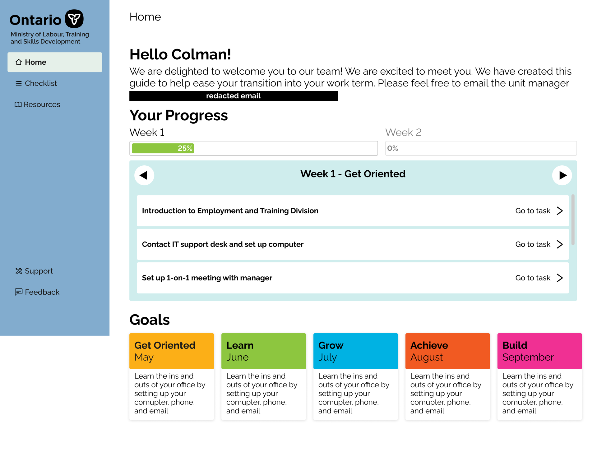
Home page
- Welcome message
- Welcomed users and gave them their direct manager's email.
- Progress bar and task list
- An overview of what needed to be completed that week and how far along they were.
- Goals
- A modular goals panel that managers could change depending on what their unit needed.
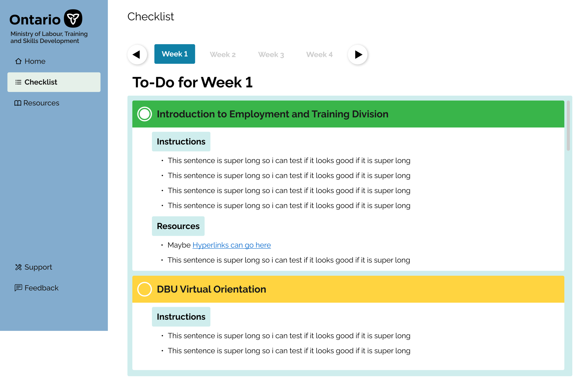
Checklist
- Weekly tabs
- Let proactive interns look at what they could expect in the future.
- Coloured check-off headers
- Colour helped users see at a glance which tasks needed attention first.
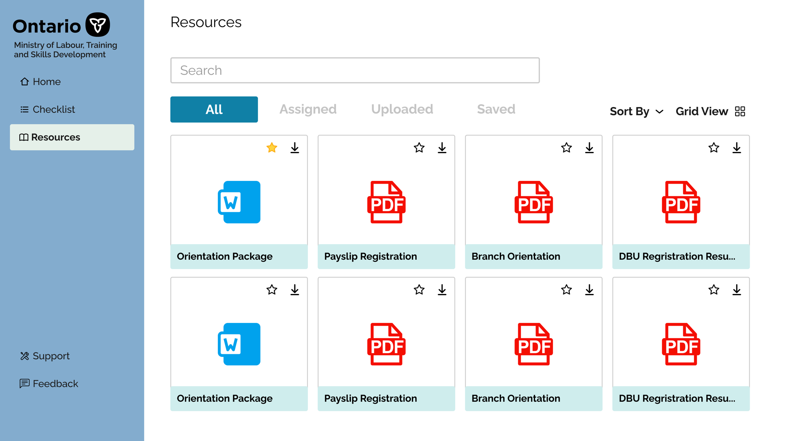
Resources
- File sorting
- New hires were given lots of files, so sorting and search were crucial.
- Favourites
- Frequently accessed files could be moved to the top of the sorter.
The app's impact
Managers were ecstatic to see the high-fidelity prototypes, and we were in the process of implementing a live version on PowerApps. The designs were handed off to the development team to develop further.
View the full prototype on FigmaTakeaways & learnings
We were able to partially develop the onboarding application on PowerApps. We ran out of time to fully build it, but the team is still developing it. Building this product also required a deeper understanding of how hiring managers and mentors traditionally approached onboarding, so we could build on their existing training experiences for new hires.